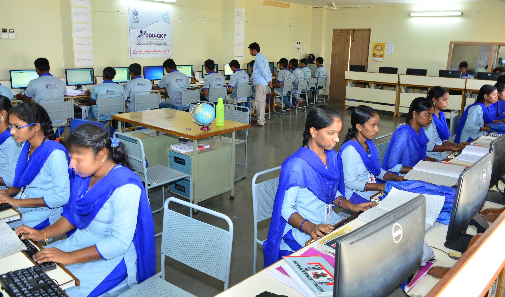
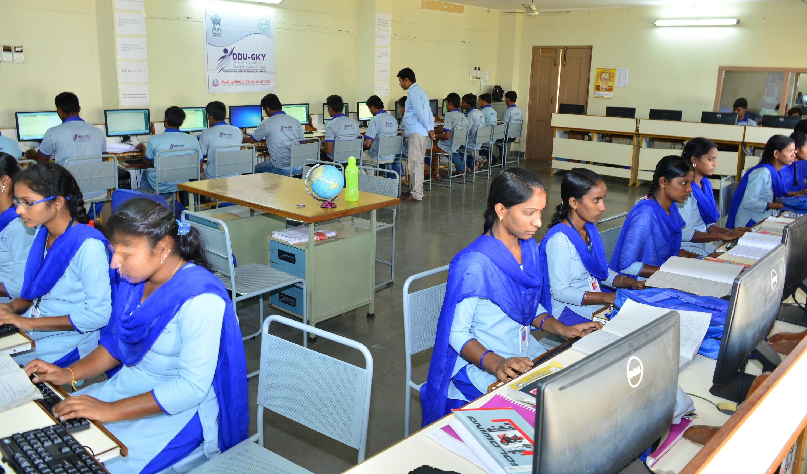
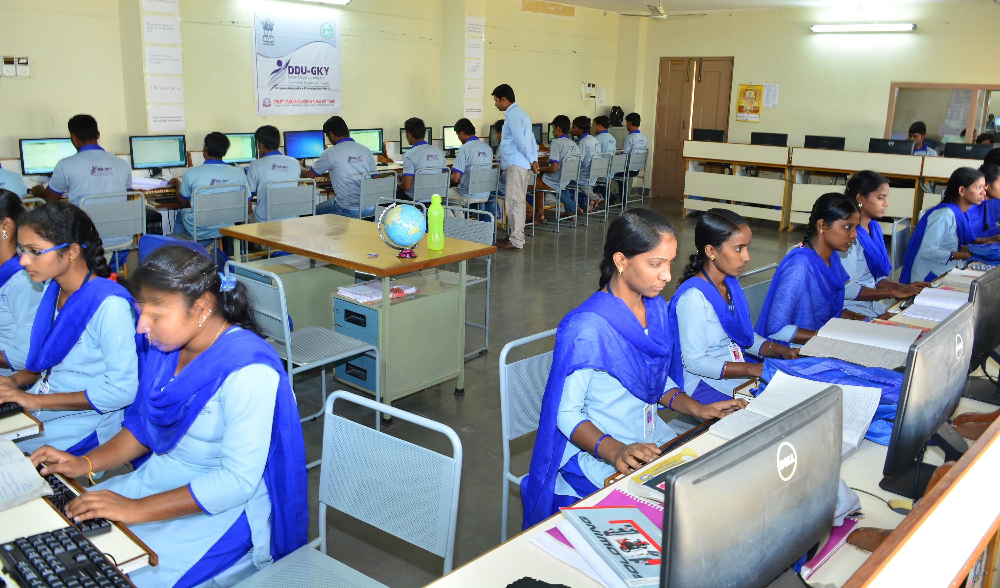
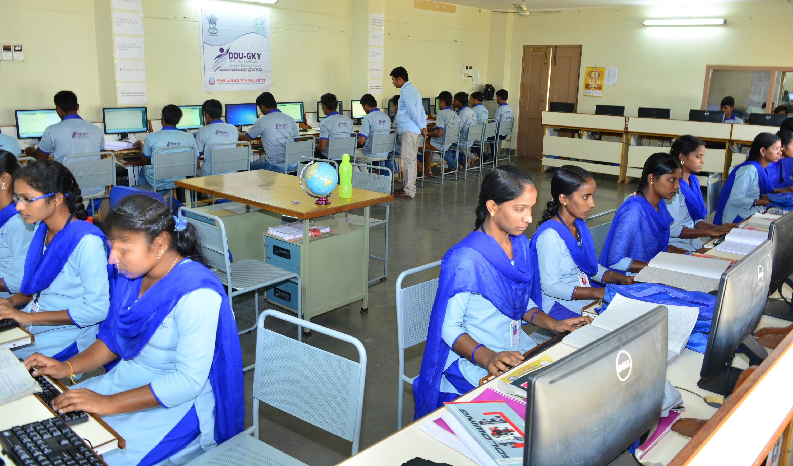

 

My time at Virtual Lab, during my final semester as an undergraduate, was extremely rewarding. I loved that I could start my day with no schedule, and by the end of it I had took part in the interview process for summer interns. Not only have I gained understanding of how CSR works; I now have an idea of how it is differrent from the life of ours.
The day I was asked to go to a village under my Rural Area Work Experience (RAWE), village internship program as a part of my degree program B Sc. (IT), I was very sad initially not because there would be work, but because it was difficult for me to stay in a village for such a long time as I was used to an urban lifestyle. But when I went and stayed there for a few weeks, I realized there were changes in myself. It helped me in growing myself a lot.
I have interned at Virtual Labfor the past two summers. That's how good it is! I worked on a variety of projects, each of which increased my understanding of global public education issues. I saw how NGO adapts its approaches to the particulars of each context, the better to assure that programs meet the needs of those they serve.But what I enjoyed most, and what has solidified my desire to pursue a career in public education, are the inspiring and generous people who I met and worked with during my internship. The internship with rural people in the area helped me in finding my way, it helped me to think what I actually want which will not only satisfy me but will satisfy the society as well. It helped me in developing an insight and interest, which was buried deep inside my heart. I was able to recognize my inclination for society and its people and thus I decided to join them. India is endowed with maximum human resource and if the available resources is best utilized whether in educationor any other sector, the day is not far when India will also be among the developed nations.
The internship with rural people in the area helped me in finding my way, it helped me to think what I actually want which will not only satisfy me but will satisfy the society as well. It helped me in developing an insight and interest, which was buried deep inside my heart. I was able to recognize my inclination for society and its people and thus I decided to join them. India is endowed with maximum human resource and if the available resources is best utilized whether in educationor any other sector, the day is not far when India will also be among the developed nations.